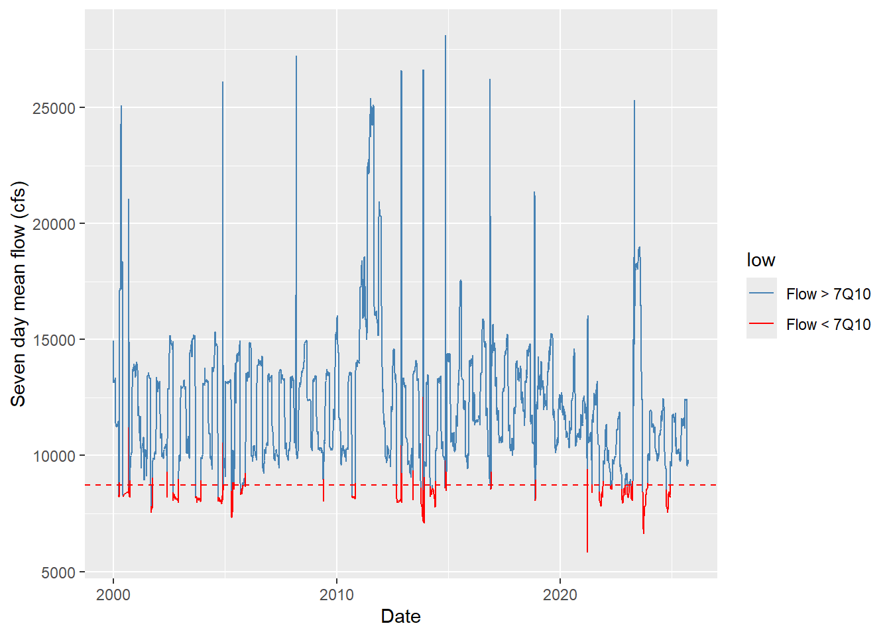
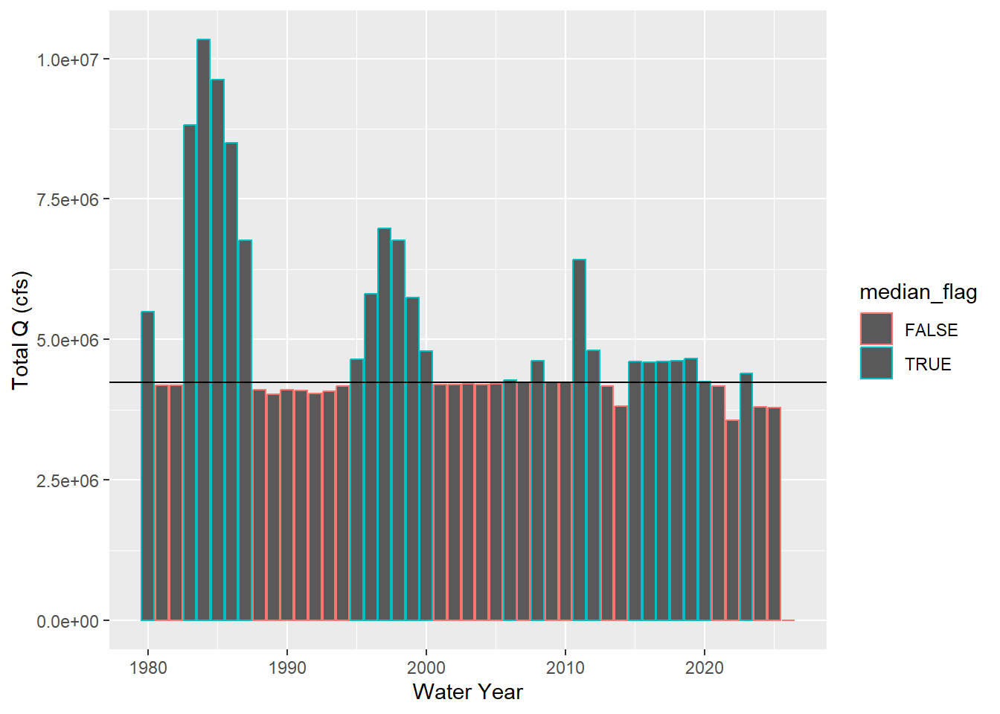
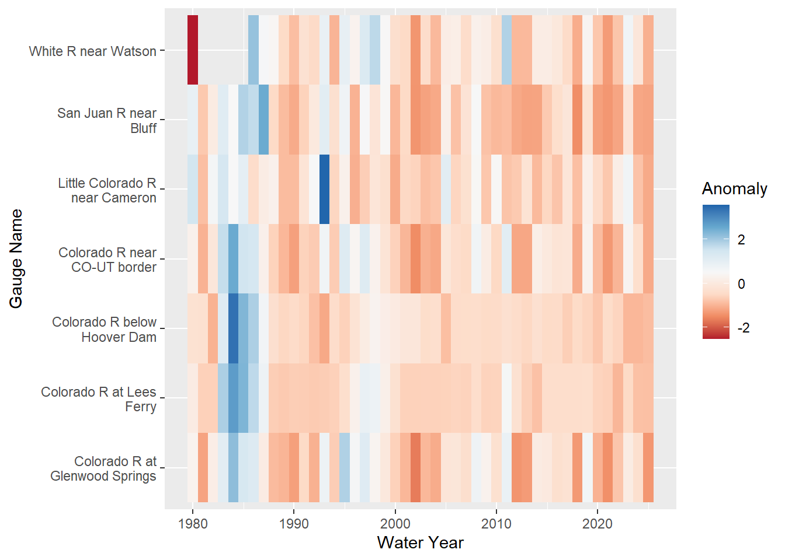
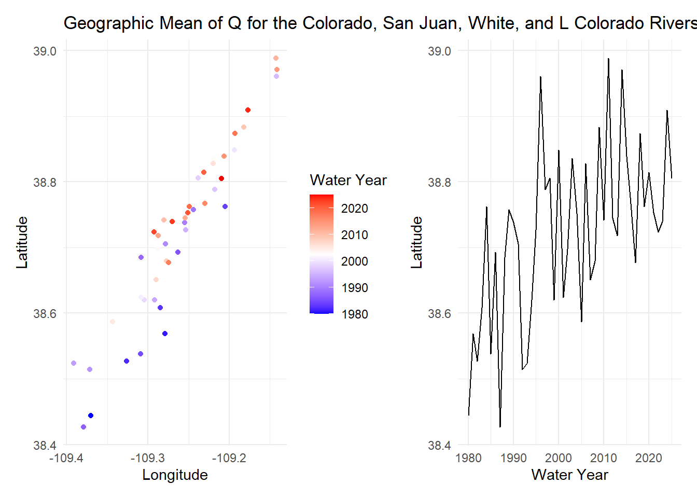
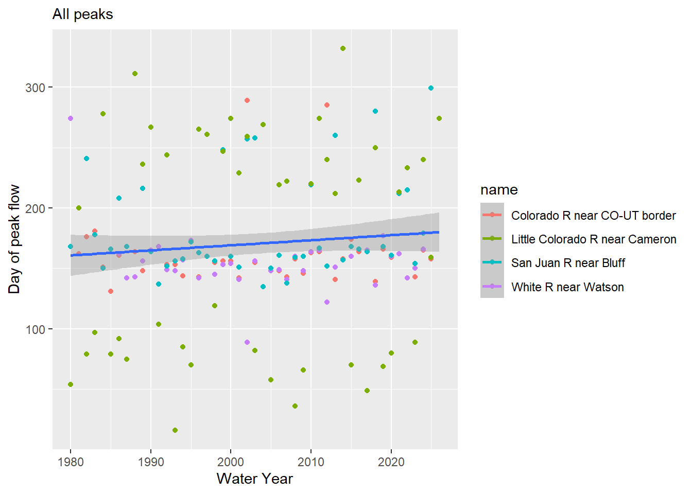
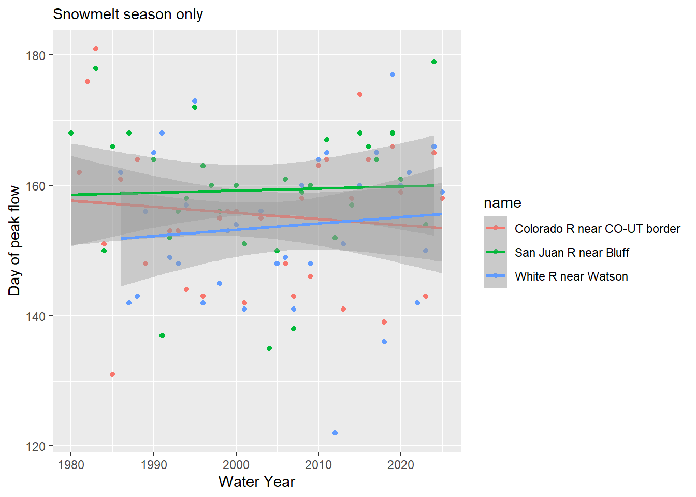
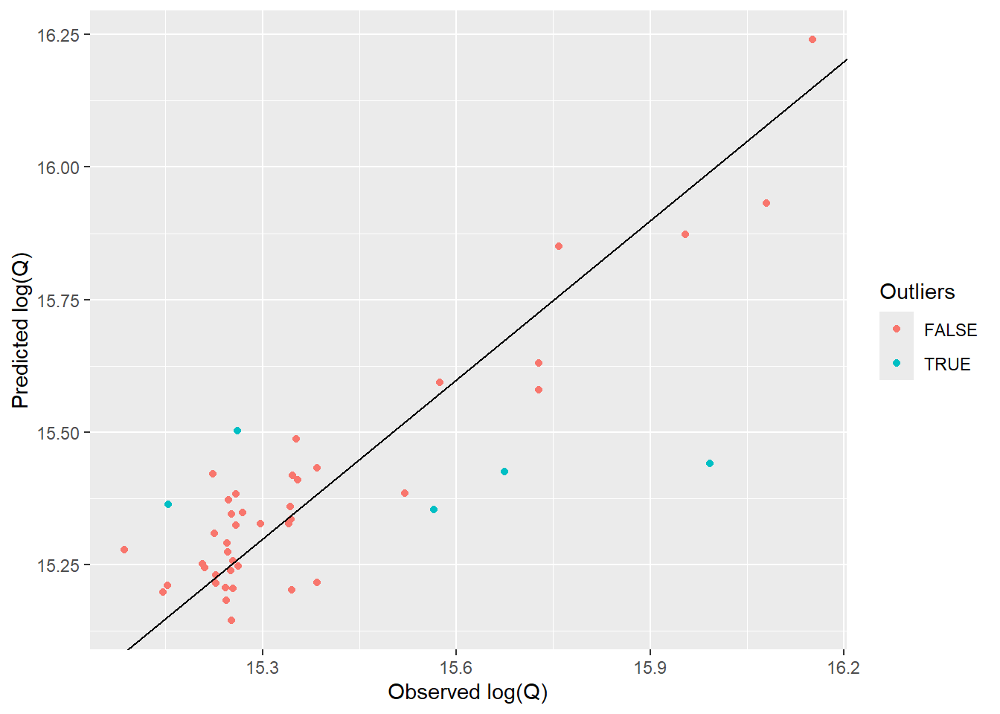
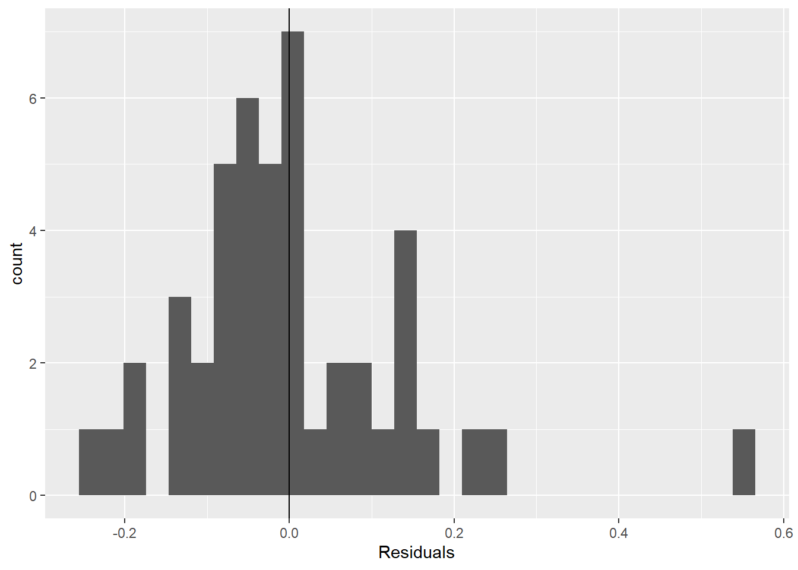

Code
pacman::p_load(
tidyverse,
dataRetrieval,
zoo,
patchwork,
flextable,
lubridate,
broom
)Will Keenan
pacman::p_load(
tidyverse,
dataRetrieval,
zoo,
patchwork,
flextable,
lubridate,
broom
)gauges <- tribble(
~site_no, ~name, ~state,
"09380000", "Colorado R at Lees Ferry", "AZ",
"09163500", "Colorado R near CO-UT border", "CO",
"09085000", "Colorado R at Glenwood Springs","CO",
"09306500", "White R near Watson", "UT",
"09379500", "San Juan R near Bluff", "UT",
"09402000", "Little Colorado R near Cameron","AZ",
"09421500", "Colorado R below Hoover Dam", "NV"
)
raw <- readNWISdv(
siteNumbers = gauges$site_no,
parameterCd = "00060",
startDate = "1979-10-01",
endDate = "2025-10-01"
) |>
renameNWISColumns() |> # renames X_00060_00003 → Flow
left_join(gauges, by = "site_no") |>
select(site_no, name, state, Date, Flow)Warning in readNWISdv(siteNumbers = gauges$site_no, parameterCd = "00060", :
NWIS servers are slated for decommission. Please begin to migrate to
read_waterdata_daily.GET: https://waterservices.usgs.gov/nwis/dv/?site=09380000%2C09163500%2C09085000%2C09306500%2C09379500%2C09402000%2C09421500&format=waterml%2C1.1&ParameterCd=00060&StatCd=00003&startDT=1979-10-01&endDT=2025-10-01glimpse(raw)Rows: 115,432
Columns: 5
$ site_no <chr> "09085000", "09085000", "09085000", "09085000", "09085000", "0…
$ name <chr> "Colorado R at Glenwood Springs", "Colorado R at Glenwood Spri…
$ state <chr> "CO", "CO", "CO", "CO", "CO", "CO", "CO", "CO", "CO", "CO", "C…
$ Date <date> 1979-10-01, 1979-10-02, 1979-10-03, 1979-10-04, 1979-10-05, 1…
$ Flow <dbl> 519, 519, 519, 526, 526, 560, 568, 575, 582, 598, 590, 612, 61…Let’s look at data up to water year 2025
my.date <- as.Date("2025-09-30")b. I compute the day-over-day change in discharge for each gauge — how much flow rose or fell compared to the previous day. Store this as a new column called flow_delta. This tells us whether conditions are improving or deteriorating, which is often more actionable than the raw level alone.
# make it wide to safely calculate lag for each gage
wide_raw <- pivot_wider(raw, names_from = name, values_from = Flow, id_cols=Date)
# calculate lag for each gage
wide_raw <- wide_raw %>%
mutate(across(`Colorado R at Glenwood Springs`:`Colorado R below Hoover Dam`, ~.x - lag(.x), .names = "{.col}_flow_delta"))c. Filter to my.date and produce two formatted tables using flextable:
# Filter the flow data
dayFlow <- wide_raw %>%
filter(Date == my.date) %>%
select(`Colorado R at Glenwood Springs`:`Colorado R below Hoover Dam`)
# Filter the diff data
dayDiff <- wide_raw %>%
filter(Date == my.date) %>%
select(`Colorado R at Glenwood Springs_flow_delta`:`Colorado R below Hoover Dam_flow_delta`)
# flip back to long, filter to top 5
dayFlow <- pivot_longer(dayFlow, cols = colnames(dayFlow), names_to="Name", values_to = 'Flow (cfs)') %>%
arrange(desc(`Flow (cfs)`))
dayFlow <- dayFlow[1:5, ]
# rename so table looks cleaner
dayDiff <- dayDiff %>%
rename_with(~ gsub("_flow_delta", "", .x))
# flip back to long, filter to top 5
dayDiff <- pivot_longer(dayDiff, cols = colnames(dayDiff), names_to="Name", values_to = 'Delta Flow (cfs)') %>%
arrange(desc(`Delta Flow (cfs)`))
dayDiff <- dayDiff[1:5, ]
dayFlow$Rank <- rank(-dayFlow$`Flow (cfs)`)
dayDiff$Rank <- rank(-dayDiff$`Delta Flow (cfs)`)
table1 <- flextable(dayFlow)
set_caption(table1, paste('Top 5 highest flow on', my.date))Name | Flow (cfs) | Rank |
|---|---|---|
Colorado R at Lees Ferry | 9,410 | 1 |
Colorado R below Hoover Dam | 4,480 | 2 |
Colorado R near CO-UT border | 3,120 | 3 |
San Juan R near Bluff | 1,050 | 4 |
Colorado R at Glenwood Springs | 477 | 5 |
table2 <- flextable(dayDiff)
set_caption(table2, paste('Top 5 biggest increase from yesterday', my.date))Name | Delta Flow (cfs) | Rank |
|---|---|---|
White R near Watson | 30 | 1 |
Little Colorado R near Cameron | 10 | 2 |
Colorado R at Glenwood Springs | -1 | 3 |
Colorado R near CO-UT border | -30 | 4 |
Colorado R at Lees Ferry | -50 | 5 |
Raw discharge numbers alone don’t tell the full story. Lees Ferry always carries more water than the San Juan at Bluff — but that is largely because it drains over 111,000 square miles versus the San Juan’s ~23,000. To compare these sites meaningfully, we need each gauge’s drainage area. That information lives in a separate table and must be joined in.
a. Pull site metadata for all 7 gauges. Before joining, verify that site_no is actually unique in site_meta — a duplicated key will silently inflate your row count.
site_meta <- readNWISsite(gauges$site_no) |>
select(
site_no,
drain_area_va, # drainage area in square miles
huc_cd, # 8-digit HUC watershed code
dec_lat_va, # latitude
dec_long_va # longitude
)Warning in readNWISsite(gauges$site_no): NWIS servers are slated for
decommission. Please begin to migrate to read_waterdata_monitoring_locationGET: https://waterservices.usgs.gov/nwis/site/?siteOutput=Expanded&format=rdb&site=09380000,09163500,09085000,09306500,09379500,09402000,09421500# Is site_no actually unique? If any row shows n > 1, the join will duplicate rows
site_meta |> count(site_no) |> filter(n > 1)[1] site_no n
<0 rows> (or 0-length row.names)b. Join site_meta to your flow data using site_no as the key. Use the join type that keeps all flow records regardless of whether metadata is available.
gauges <- left_join(gauges, site_meta, by="site_no")
flow_meta <- left_join(raw, site_meta, by='site_no')c. Verify the join — this step is not optional
# Check 1: row count must be unchanged
# FALSE means rows were gained (duplicate key) or lost (wrong join type)
nrow(flow_meta) == nrow(raw)[1] TRUE# Check 2: no unexpected NAs in the joined column
flow_meta |>
summarize(
n_total = n(),
n_missing_area = sum(is.na(drain_area_va)),
pct_complete = round(100 * mean(!is.na(drain_area_va)), 1)
) n_total n_missing_area pct_complete
1 115432 0 100# Check 3: spot-check a known value
# Lees Ferry (09380000) should have drain_area_va ≈ 111,800 mi²
flow_meta |>
filter(site_no == "09380000") |>
distinct(site_no, name, drain_area_va) site_no name drain_area_va
1 09380000 Colorado R at Lees Ferry 111800Lees Ferry’s high discharge reflects its enormous watershed, not necessarily more intense rainfall or runoff. To compare runoff intensity across sites with different drainage areas, we normalize by expressing flow per unit area: cfs per square mile.
a. Add a flow_per_sqmi column: flow_per_sqmi = Flow / drain_area_va.
flow_meta$flow_per_sqmi <- flow_meta$Flow / flow_meta$drain_area_va
flow_meta$flow_per_sqmi <- round(flow_meta$flow_per_sqmi, digits=3)
flowday <- flow_meta |>
filter(Date == my.date)
flowday$raw_rank <- rank(-flowday$Flow)
flowday$rank <- rank(-flowday$flow_per_sqmi)
flowday <- flowday |>
select(name, Flow, flow_per_sqmi, drain_area_va, raw_rank, rank) |>
rename(`Flow (cfs)` = Flow,
`Normalized flow (cfs/sqmi)` = flow_per_sqmi,
`Drainage Area (sqmi)` = drain_area_va) |>
arrange(raw_rank)
flextable(flowday)name | Flow (cfs) | Normalized flow (cfs/sqmi) | Drainage Area (sqmi) | raw_rank | rank |
|---|---|---|---|---|---|
Colorado R at Lees Ferry | 9,410 | 0.084 | 111,800 | 1 | 4 |
Colorado R below Hoover Dam | 4,480 | 0.026 | 171,700 | 2 | 6 |
Colorado R near CO-UT border | 3,120 | 0.175 | 17,849 | 3 | 2 |
San Juan R near Bluff | 1,050 | 0.046 | 23,000 | 4 | 5 |
Colorado R at Glenwood Springs | 477 | 0.328 | 1,453 | 5 | 1 |
White R near Watson | 344 | 0.086 | 4,020 | 6 | 3 |
Little Colorado R near Cameron | 124 | 0.005 | 26,459 | 7 | 7 |
The raw and normalized flow differs dramatically because the lower Colorado basin is far more arid than the upper basin. The raw flow below the Hoover Dam is very high, but normalized by the basin’s size it is the smallest of our basins. Raw discharge would be appropriate for a study estimating water resource allocation of a specific river. Normalized discharge allows you to compare precipitation and runoff generation efficiency across many basins of different sizes.
Drought managers don’t just watch absolute flow levels — they watch how current conditions compare to historical norms. The standard operational metric is the 7Q10: the lowest 7-day average flow expected to occur once in 10 years. We’ll use a related approach: flag when the 7-day rolling mean falls below the historical 10th percentile.
a. For each gauge, compute the 7-day rolling mean of daily discharge. Use zoo::rollmean() with fill = NA and align = "right" so each value represents the average of the current and 6 preceding days.
# a better solution than making it pivot wide...
flow_meta <- flow_meta |>
group_by(name) |>
mutate(
sevenday = rollmean(Flow, k = 7, fill = NA, align = 'right')
) |>
ungroup()b. Define a low-flow threshold for each gauge as the 10th percentile of its historical discharge during 1980–2010. A flow that is critically low for Lees Ferry might be above average for the Little Colorado — thresholds must be site-specific.
c. Add a logical column below_threshold that is TRUE when the 7-day rolling mean is below the gauge’s 10th percentile threshold.
flow_meta <- flow_meta |>
group_by(name) |>
mutate(p10 = quantile(sevenday, probs=0.1, na.rm=TRUE)) |>
mutate(
low = ifelse(sevenday<p10, TRUE, FALSE)
) |>
ungroup()d. For Lees Ferry (site 09380000) — the Compact’s primary accounting point — plot the 7-day rolling mean from 2000–2023. Shade periods below threshold in red and add a dashed horizontal reference line at the threshold.
lf_gageid <- '09380000'
lees <- flow_meta |>
filter(site_no == lf_gageid) |>
filter(Date > as.Date('2000-01-01') & Date < my.date)
ggplot(data = lees, aes(x = Date, y = sevenday, color=low, group=1)) +
geom_line() +
scale_color_manual(
values = c("TRUE" = "red", "FALSE" = "steelblue"),
labels = c("TRUE" = "Flow < 7Q10", "FALSE" = "Flow > 7Q10")
) +
labs(
x = "Date",
y = "Seven day mean flow (cfs)"
) +
geom_hline(yintercept = first(lees$p10), linetype='dashed', color='red') 
e. How many days per year, on average, did Lees Ferry fall below its low-flow threshold in 2000–2010 vs. 2011–2023? Produce a small summary table and answer in 2–3 sentences: (1) did below-threshold days increase or decrease? (2) Is this a shift in isolated dry years or a persistent baseline change? (3) What does this imply for Compact delivery obligations?
library(lubridate)
lees <- lees |>
mutate(Year = year(Date))
lees2 <- lees |>
group_by(Year) |>
summarize(lowDays = sum(low))
earlyLees <- lees2 |>
filter(Year<2011)
lateLees <- lees2 |>
filter(Year>=2011)
table <- tibble(
period = c("2000-2010", "2011-2023"),
days_below_7Q10 = c(round(mean(earlyLees$lowDays)), round(mean(lateLees$lowDays)))
)
flextable(table)period | days_below_7Q10 |
|---|---|
2000-2010 | 48 |
2011-2023 | 41 |
The yearly average below threshold days decreased from 2011 to 2023 compared to 2000 to 2010. This is likely due to the wet years around 2011 and 2015. The compact dictates how much total water the upper and lower basins recieve. Although low flow days may reflect drought conditions sometimes, they are also driven by Glen Canyon power generation requirements and ecological flow experiments in the Grand Canyon. They are not a good measurement to examine compact requirements.
##Annual Water Year Summary
Calendar years are a poor fit for western US hydrology. The water year (October 1 – September 30) captures the full snowmelt cycle: snowpack accumulates through winter, melts in spring, and by September the basin has recharged or drawn down for the year. Water year 2023 = October 1, 2022 through September 30, 2023.
a. Add water_year and month columns to your dataset. The water year is the calendar year of the ending September 30 — months October through December belong to the next water year.
b. For each gauge and water year, compute: total annual discharge (sum(Flow)), peak daily discharge (max(Flow)), and number of days below the low-flow threshold (sum(below_threshold)).
flow_meta <- flow_meta |>
mutate(wy = ifelse(month(Date) > 9, year(Date)+1, year(Date))) |>
mutate(Month = month(Date))
annual <- flow_meta |>
group_by(wy, site_no) |>
summarize(totalQ = sum(Flow, na.rm=TRUE), lowdays = sum(low, na.rm=TRUE), name=first(name)) |>
arrange(name, wy)`summarise()` has grouped output by 'wy'. You can override using the `.groups`
argument.c. Plot total annual discharge at Lees Ferry by water year (1980–2023) as a bar chart. Color bars above the long-term median blue and bars below it red. Add a dashed horizontal reference line at the median.
lees3 <- annual |>
filter(site_no==lf_gageid)
median <- median(lees3$totalQ)
lees3$median_flag <- lees3$totalQ > median
ggplot(data=lees3, aes(x=wy, y=totalQ, color=median_flag)) +
geom_col() +
geom_hline(yintercept = median) +
labs(x='Water Year', y='Total Q (cfs)')
The period from 1980 to 2000 was significantly wetter than 2000 to 2026. 1984 was particularly wet, with large amounts of snow across Colorado, Utah, and Wyoming leading to high inflows to Lake Powell. Glen Canyon was almost destroyed by the massive amounts of water which threatened to overtop the dam. The post-2000 shift to drought conditions has threatened the CO River Compact and negotiations are currently taking place for the future of the river.
A single gauge tells you about one location. To understand whether drought is consistent across the entire basin — or whether some tributaries are diverging from the main stem — you need to compare all gauges simultaneously on the same scale.
Raw discharge can’t serve this purpose: a large-watershed gauge will always dominate. The solution is a standardized anomaly — each year’s flow expressed as standard deviations above or below the site’s own baseline mean:
\[\text{anomaly} = \frac{\bar{Q}_{year} - \bar{Q}_{baseline}}{\sigma_{baseline}}\]
where baseline = 1980–2010. An anomaly of –2 means “two standard deviations below normal for this gauge” — directly comparable to the same metric at any other gauge.
a. Compute the 1980–2010 baseline mean and SD per gauge. Join those stats back to the full annual data and compute the standardized anomaly for every gauge-year combination.
annual_pre <- annual |>
filter(wy<2010) |>
group_by(site_no) |>
mutate(meanQ = mean(totalQ), stdQ = sd(totalQ)) |>
filter(wy==2009) |>
select(meanQ, stdQ, site_no)
annual <- left_join(annual, annual_pre, by='site_no')
annual$anomaly <- (annual$totalQ - annual$meanQ) / annual$stdQ
# get rid of 2026, incomplete water year
annual <- annual |>
filter(wy!=2026)b. Visualize as a heatmap: water year on x, gauge name on y, fill = standardized anomaly. Use a diverging color scale centered at zero (blue = above average, red = below average).
ggplot(annual, aes(x=wy, y=name, fill=anomaly)) +
geom_tile() +
scale_fill_distiller(palette = "RdBu", direction = 1)+
# 2. Use 'label_wrap' or 'str_wrap' to handle long y-axis names
scale_y_discrete(
labels = scales::label_wrap(20) # Wraps text longer than 20 characters
) +
labs(
x = "Water Year",
y = "Gauge Name",
fill = "Anomaly"
)
The post-2000 drought is seen pretty much across the board. Compared to the rest of the 2000 - 2024 years, 2011 was exceptionally wet in Colorado. This was driven by a large snowpack which steadily accumulated all the way through April in contrast to the average peak in mid March. The following year, 2012, was one of the lowest snowpacks on record. Snowpack peaked in early March and never recovered. This view of streamflow anomalies highlights how each sub-basin contributed to the annual streamflow recorded at Hoover Dam.
I have been asked to understand how the geographic locus of streamflow has shifted over time. If drought has disproportionately reduced flow in the southern tributaries, the flow-weighted center of the basin should drift north — proportionally more flow is coming from northern headwater gauges. In exceptional snowmelt years it should shift back.
We measure this with the flow-weighted mean position: each gauge’s coordinates are weighted by its fraction of total annual basin flow.
\[\bar{X}_{year} = \frac{\sum (lon_i \times Q_i)}{\sum Q_i} \qquad \bar{Y}_{year} = \frac{\sum (lat_i \times Q_i)}{\sum Q_i}\]
a. Join gauge coordinates (dec_lat_va, dec_long_va) from site_meta to your annual summary. Compute the flow-weighted mean latitude and longitude for each water year. I limit my analysis to the 4 headwater gauges.
locus <- annual |>
left_join(site_meta |> select(site_no, dec_lat_va, dec_long_va), by = "site_no")
headwaters <- c('09163500', '09306500', '09379500', '09402000')
# the total flow per year should be the sum of Colorado at CO-UT, white River, and Little colorado.
locus <- locus |>
filter(site_no %in% headwaters)
locusTotal <- locus |>
group_by(wy) |>
mutate(totaltotalQ = sum(totalQ),
fracQ = totalQ/totaltotalQ,
lat_weighted = dec_lat_va * fracQ,
lon_weighted = dec_long_va * fracQ,
lat_w = sum(lat_weighted),
lon_w = sum(lon_weighted))
# select just one that has all the years
locusT <- locusTotal |>
filter(site_no=='09163500') |>
select(wy, lat_w, lon_w, totaltotalQ)b. Create a two-panel figure using patchwork:
library(patchwork)
westUS <- map_data("state") |>
filter(region %in% c('utah'))
locusT <- locusT[order(locusT$wy), ]
left <- ggplot(data=locusT, aes(x=lon_w, y=lat_w)) +
geom_point(aes(color=wy)) +
scale_color_gradientn(colors = c("blue", "white", "red")) +
labs(x='Longitude', y='Latitude', color='Water Year',title='Geographic Mean of Q for the Colorado, San Juan, White, and L Colorado Rivers')+
theme_minimal()
right <- ggplot(data=locusT, aes(x=wy, y=lat_w)) +
geom_line()+
labs(x='Water Year', y='Latitude')+
theme_minimal()
left + right
The geographic locus has slowly shifted North and East over the past 40 years. This shift likely reflects lower flows in the Southern basins such as the Little Colorado. This could be related to anthropogenic use of groundwater or increased evaporative demand from climate change that has reduced the amount of water that makes it to the river. In general, the snow-dominated basins in the North are becoming relatively more important. Water managers in arid states like Arizona may rely even more heavily on water from the upper basin states.
Annual totals mask important seasonal structure. The Colorado Basin has two distinct runoff pulses: a snowmelt surge in spring (April–June) driven by Rocky Mountain headwater snowpack, and a monsoon pulse in late summer (July–September) driven by convective storms across the Arizona-New Mexico plateau. These seasons respond differently to climate forcing — and under warming, the snowmelt season is arriving earlier.
a. Add a season column using case_when():
Make season a factor with levels in hydrological order: Snowmelt, Monsoon, Low-flow, Winter.
season <- flow_meta |>
mutate(
month = month(Date),
season = case_when(month>3 & month<7 ~ 'Snowmelt',
month>6 & month<10 ~ 'Monsoon',
month>9 & month<13 ~ 'Low-flow',
month>0 & month<4 ~ 'Winter'),
season = factor(season, levels = c('Snowmelt', 'Monsoon', 'Low-flow', 'Winter'))
)b. Group by gauge, water year, and season. Summarize total seasonal discharge and normalized runoff (sum(flow_per_sqmi)) per group.
season_g <- season |>
group_by(site_no, wy, season) |>
summarize(total_flown = sum(flow_per_sqmi),
total_flow = sum(Flow))`summarise()` has grouped output by 'site_no', 'wy'. You can override using the
`.groups` argument.c. For each gauge and water year, identify the date of peak 7-day mean flow and convert it to day-of-year. Plot peak day-of-year vs. water year for Lees Ferry with a linear trend line.
max7 <- season |>
group_by(site_no, wy) |>
slice_max(sevenday, n=1, with_ties=FALSE) |>
mutate(doy = yday(Date))
max7_filt <- max7 |>
filter(site_no %in% headwaters)
max7_snow <- max7_filt |>
filter(season == 'Snowmelt' & site_no != '09402000')
left <- ggplot(max7_filt, aes(x=wy, y=doy, color=name)) +
geom_point() +
labs(x='Water Year', y='Day of peak flow', subtitle = 'All peaks') +
geom_smooth(method='lm', aes(group=1))
right <- ggplot(max7_snow, aes(x=wy, y=doy, color=name)) +
geom_point() +
labs(x='Water Year', y='Day of peak flow', subtitle = 'Snowmelt season only') +
geom_smooth(method='lm')
left`geom_smooth()` using formula = 'y ~ x'Warning: The following aesthetics were dropped during statistical transformation:
colour.
ℹ This can happen when ggplot fails to infer the correct grouping structure in
the data.
ℹ Did you forget to specify a `group` aesthetic or to convert a numerical
variable into a factor?
right`geom_smooth()` using formula = 'y ~ x'
When we look at all the data, we see a general trend towards a later peak. However, much of this trend is driven by the monsoon season and the Little Colorado river. When we limit our analysis to snowmelt-driven basins and years, the data tell a different story. The peak magnitude is generally declining in the Colorado River, although there is a fair amount of noise in the data. In the San Juan River, the trend is slightly increasing, but this is nonsignificant. Reservior operators would need to consider a two week earlier timing because it would affect when the reservior fills each year. To manage flood risk, reservior operators would want to release water before the peak.
Lees Ferry is the Compact’s accounting point — the location where upper basin states must deliver flow to lower basin states. Predicting annual discharge at Lees Ferry from upstream conditions has direct operational value: managers can begin planning deliveries months before the water arrives.
We’ll build a simple but physically grounded model: can Glenwood Springs (an upper Rocky Mountain gauge) predict Lees Ferry annual flow? Does that relationship change by season?
a. Build your model dataset through four sequential operations:
annual to Lees Ferry; rename total_flow to lees_flow09085000); rename to glenwood_flowdominant_season <- season |>
filter(site_no == '09380000') |>
group_by(wy, season) |>
summarize(szntotal = sum(Flow)) |>
group_by(wy) |>
slice_max(order_by = szntotal, n=1) |>
ungroup()`summarise()` has grouped output by 'wy'. You can override using the `.groups`
argument.lees_model_data <- annual |>
filter(site_no == "09380000") |>
rename(lees_flow = totalQ) |>
left_join(annual |> filter(site_no == "09085000") |> rename(glenwood_flow = totalQ),
by = "wy") |>
mutate(log_lees = log(lees_flow),
log_glenwood = log(glenwood_flow)) |>
select(log_glenwood, log_lees, wy) |>
left_join(dominant_season, by='wy')
# Verify: 44 rows? No NAs in log columns?
#nrow(lees_model_data)
#sum(is.na(lees_model_data$log_lees))b. Fit a linear model predicting log_lees from log_glenwood, season, and their interaction:
mod <- lm(log_lees ~ log_glenwood * season, data = lees_model_data)
summary(mod)
Call:
lm(formula = log_lees ~ log_glenwood * season, data = lees_model_data)
Residuals:
Min 1Q Median 3Q Max
-0.24213 -0.07682 -0.02310 0.05807 0.55198
Coefficients:
Estimate Std. Error t value Pr(>|t|)
(Intercept) -8.1111 5.1484 -1.575 0.123439
log_glenwood 1.7973 0.3869 4.645 3.99e-05 ***
seasonMonsoon 19.9104 5.2685 3.779 0.000541 ***
seasonLow-flow 16.1053 5.9210 2.720 0.009789 **
seasonWinter 24.3984 7.7790 3.136 0.003296 **
log_glenwood:seasonMonsoon -1.5238 0.3966 -3.842 0.000449 ***
log_glenwood:seasonLow-flow -1.2155 0.4495 -2.704 0.010194 *
log_glenwood:seasonWinter -1.8808 0.5985 -3.143 0.003240 **
---
Signif. codes: 0 '***' 0.001 '**' 0.01 '*' 0.05 '.' 0.1 ' ' 1
Residual standard error: 0.1498 on 38 degrees of freedom
Multiple R-squared: 0.7162, Adjusted R-squared: 0.664
F-statistic: 13.7 on 7 and 38 DF, p-value: 1.086e-08The R2 is 0.72 and the p-value is 1e-8. This model is statisically significant and is moderately good at predicting streamflow at Lee’s Ferry. The coefficient for the snowmelt season is 1.8. This indicates that for every 1% increase in streamflow at Glenwood, Lee’s increases by 1.8%. All of the season interaction terms are significant, meaning that the dominant season does effect the relationship between flow at Glenwood and flow at Lees. The interaction terms for every season other than snowmelt are negative because the relationship is weaker in these seasons. For example, if Glen Canyon dam didn’t release most of its water until the winter, then the flow at Glenwood won’t be a good predictor of that flow.
A model that fits well on average can still fail in predictable ways. Two core assumptions of linear regression are: predictions should be unbiased across the full range of fitted values, and residuals should be approximately normally distributed. Let’s check both — and look for the outlier year that the model cannot predict.
a. Use broom::augment() to produce a tidy data frame of predictions and residuals alongside the original data:
aug <- augment(mod, data = lees_model_data)b. Create a predicted vs. actual scatter plot. Add a dashed 1:1 reference line (perfect prediction). Color points by season. Identify any point that sits noticeably off the line.
badguess <- quantile(aug$.resid, probs=0.95)
aug$outlier <- (aug$.resid > badguess)|(aug$.resid < badguess*-1)
ggplot(aug, aes(x=log_lees, y=.fitted, color=outlier))+
geom_point()+
geom_abline(slope=1, intercept=0)+
labs(x='Observed log(Q)', y='Predicted log(Q)', color='Outliers')
c. Plot a histogram of the residuals with a vertical dashed line at zero.
ggplot(data=aug, aes(.resid))+
geom_histogram()+
geom_vline(xintercept=0)+
labs(x='Residuals')`stat_bin()` using `bins = 30`. Pick better value `binwidth`.
The model was a poor predictor during the flood of 1983. During the flood, Lake Powell reached the top of Glen Canyon Dam and threatened to over top it. Reservoir managers released huge quantities of water through the spillways to prevent it’s destruction. The residuals appear normally distributed around the 1:1 line, although the model does tend to overpredict in low flow years. Other predictors that would inform the model is how full Lake Powell is at the beginning of each water year and the previous year’s total Q. This would allow the model to predict if reservoir managers are releasing water for flood prevention or storing it for future drought.